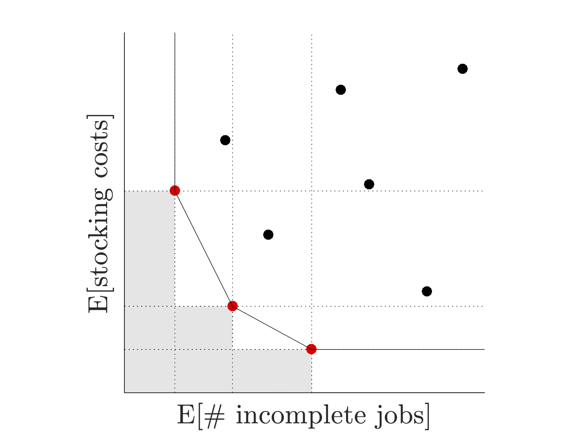

Kalyani Nagaraj
 |
Kalyani Nagaraj, Ph.D. |
A Brief Bio
Prior to joining OSU in August 2016, I was a Visiting Assistant Professor in the Department of Statistics at University Purdue University from 2014 to 2016. I graduated with a Masters and a Ph.D. in Industrial and Systems Engineering (Operations Research) from Virginia Tech in 2008 and 2014, respectively, and a Bachelors in Engineering from University of Pune in 2007.
Research Highlights
Stochastic simulations are increasingly used to model complex, real-world systems like weather, financial markets, and emergency health care systems. The outcomes of such systems (for example, the number of people that will be affected by an emerging pandemic 1) are typically subject to uncertainty. Moreover, they often have no known functional form. The optimization of such systems, and more importantly, the development of simulation-based methodology that brings about the desired system efficiencies, has become a research area of great importance.
My work in Monte Carlo simulation methodology focuses on two broad areas:
simulation optimization in the presence of one or more objectives, and
rare-event estimation and simulation optimization in the context of networks.
Simulation Optimization
A large majority of simulation optimization (SO) problems encountered in these real-world scenarios involve integer decision variables. We also routinely encounter problems in health care and manufacturing where both the objective function and the constraint functions defining the feasible region are estimated via a stochastic simulation. For instance, consider the problem of minimizing the total staffing cost of an emergency care unit while satisfying a prescribed service level. Then for a suggested staffing policy, both the cost and the service level can only be estimated via a stochastic simulation.
Solutions to such problems, particularly within resource allocation, tend to have binding stochastic constraints. This happens in situations where the objective function pushes the optimal solution against a resource boundary. Ascertaining feasibility of a boundary solution from simulation estimates is a nontrivial challenge – see Figure 1 and Movie 1. We propose the provably convergent algorithm cgR-SPLINE for this broad class of SO problems.
cgR-SPLINE is a global solver that sequentially restarts a local solver from randomized initial locations. During each local search, cgR-SPLINE iteratively solves a sequence of ε–relaxed sample-path problems. When the local search ends (termination occurs when a predetermined simulation budget — that grows with every subsequent restart — is exhausted), cgR-SPLINE returns a local solution estimate. This local solution is probabilistically compared against the incumbent to obtain a global solution estimate.
| Figure 1: The shaded area marks the feasible region of a toy optimization problem whose solution is indicated with a red dot at point (3, 0). For simplicity, let us assume that the simulation generates standard normal random variates for the constraint function h(z) at all points in the search space. | Movie 1: The sample average estimator of the constraint function at point (3, 0) equals 0.5 no matter how large the sample size m. So any solver that naively tests for feasibility in this fashion correctly identify the boundary solution (0, 3) roughly 50% of the time, for any sample size m. | Movie 2: Feasibility of the point (3, 0) (and consequently the consistency and efficiency of cgR-SPLINE) is guaranteed when the ε–relaxations in the sample-path constraints are progressively shrunk to zero at a rate slower than the rate at which the standard error of the constraint estimate drops to zero. Notice that the probability with which the point (3, 0) is deemed feasible approaches 1 as the sample size increases. |
Instead of seeking a single solution to a constrained optimization problem, decision makers are often interested in identifying several ‘‘efficient" solutions to multiple conflicting objectives. For example, in aircraft maintenance scheduling, the objectives could be the minimization of costs associated with the stocking of spare parts and the minimization of the expected number of maintenance jobs that are not completed in time.
We propose the solver R-PεRLE, which retrieves the so-called Pareto set of non-dominated solutions to a bi-objective simulation optimization problem by solving several constrained SO problems. This is achieved in the following way. A single performance measure, for instance, the expected inventory cost, is chosen to be optimized. The remaining performance measure (in the above example, the expected number of incomplete jobs) is then treated as a constraint by imposing strategically chosen upper and lower bounds. Multiple instances of this problem are solved simultaneously by appropriately varying the bounds on the constraint.
|  | |
| Figure 2(a): An illustration of the bi-objective aircraft maintenance scheduling problem. Solid red dots indicate efficient solutions, also known as non-dominated or Pareto solutions. A solution is said to be efficient if there exists no other solution that is relatively better in all objectives. | Figure 2(b): Numerical experiments on a nontrivial test problem give us the above graph showing the distance between the true and estimated Pareto sets as a function of total simulation effort. In the limit, our proposed algorithm R-PERLE retrieves the true Pareto set and the distance metric converges to zero (almost surely). |
Rare Event Estimation
Efficient sampling methods for rare event probability estimation can be of vital importance in scenarios where the event of interest has a very low likelihood of occurrence but which results in losses of significant magnitude. For example, in finance, accurately estimating the probability that a low-risk, high-reward portfolio defaults, and in critical infrastructure planning, estimating system breakdown probabilities.
We develop a suite of efficient estimators using ideas from importance sampling for NORTA (Normal-To-Anything) distributions that have a known covariance structure. The construction of one such estimator, called the partial information estimator, is illustrated below. Extensions to this work in network simulations and stochastic diffusions are topics of ongoing work.
 |  | |
| Step 1: | Step 2: | Step 3: |
| Step 4: | Step 5: | Step 6: |
| Figure 3: |
Optimization in Pandemic Planning and Learning Methods for Synthesizing Social-Contact Networks
Awards
Won second place (runner-up position) in the 2014 INFORMS Computing Society (ICS) Student Paper Competition
Positions in Academia
Assistant Professor, School of Industrial Engineering and Management, Oklahoma State University, 2016–2018
Visiting Assistant Professor, Department of Statistics, Purdue University, 2014–2016
Education
Ph.D., Industrial and Systems Engineering, Virginia Tech, 2014
M.S., Industrial and Systems Engineering, Virginia Tech, 2008
B.E., Cummins College of Engineering for Women, University of Pune, 2007